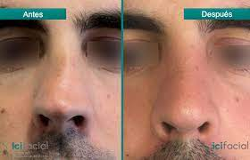
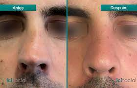

Servicios de Otorrinolaringologo en Monterrey
1consulta
2Radiofrecuencia de Cornetes
3Cirugia endoscópica para sinusitis
4Cirugia de Tabique nasal
5Endoscopia Nasal
6Otorrinolaringología Pediátrica

 
